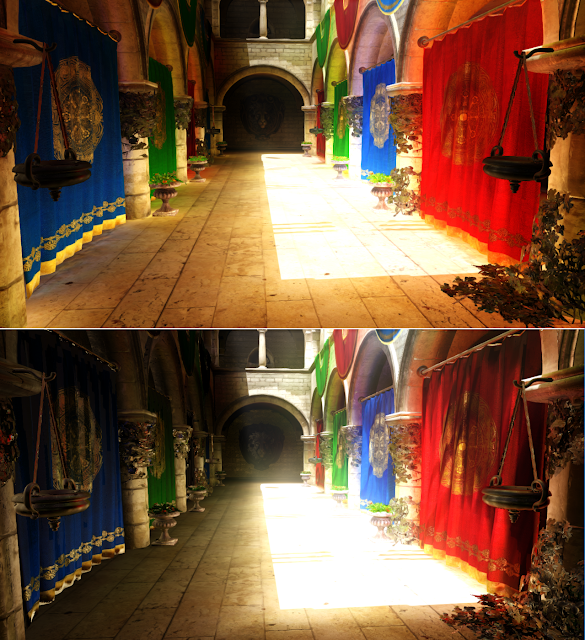

Multibounce voxel cone tracing
Voxel cone tracing, but with multiple bounces of indirect light
It has been quite a while since I implemented a derivative of the classic voxel cone tracing with volume textures in my graphics engine that kind of applies deferred rendering with voxels in order to achieve multi bounce global illumination. The idea is to voxelize the whole scene to a voxel texture and save all parameters that are needed for lighting. Similar to the regular gbuffer in deferred rendering, positions (implicitly given by world space voxels..) normals and albedo can be sufficient. Additionally, my renderer writes a flag if the object is dynamic or static, in order to be able to cache voxel data for static objects, which massively speeds up voxelization proccess and just brings the whole thing closer to realtime capable.
Decoupling lighting from voxelization also frees enough frame time to implement multiple light bounces. Therefore, for n bounces, I added n light accumulation voxel texture targets. During voxel lighting, these are traced against. Although a second bounce can significantly enhance the scene's overall lighting. I struggled getting this to work with ping-ponging textures. I also struggled with parameters like samples on the hemisphere or tracing distance, cone aperture, etc. because in the voxel world, my default parameters for gbuffer tracing didn't lead to great results. Nonetheless, I wanted to share my results with you strangers, although I tend to discard this feature, because it doesn't make voxel cone tracing's light leaking problem less appearent....
|  |
| two bounces (first), one bounce (second) |
{kind=link}